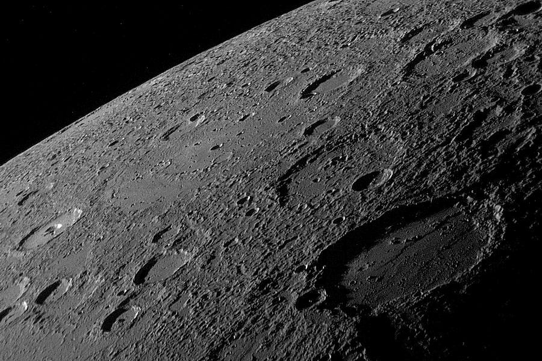
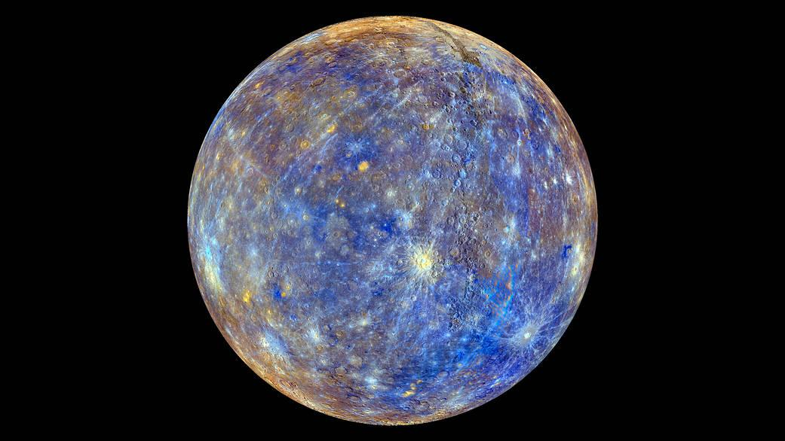
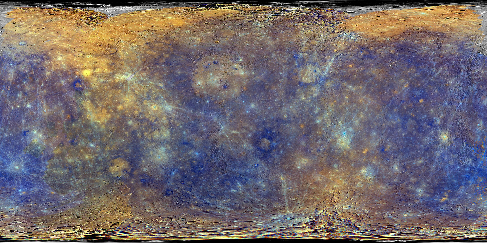
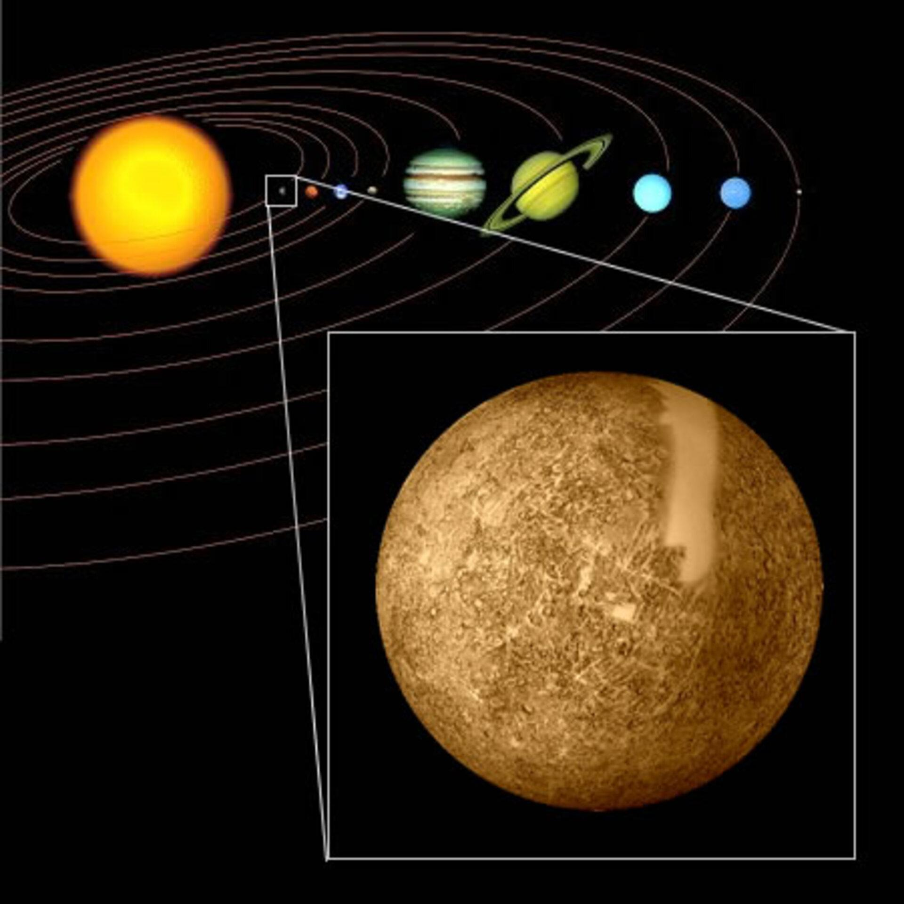
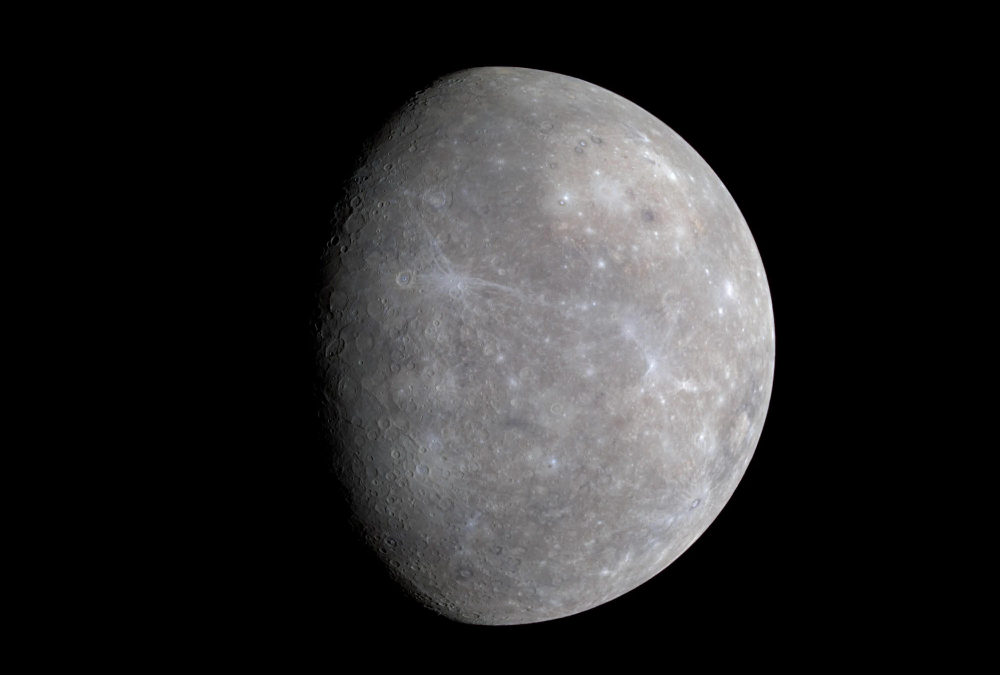

Smallest Planet
Mercury is the smallest planet in the solar system.
Mercury is the closest planet to the Sun and the smallest planet in the solar system.
Mercury formed around 4.5 billion years ago and has remained a rocky, heavily cratered world ever since. Unlike Earth, Mercury has almost no atmosphere, which means it cannot trap heat or protect itself from space conditions.
Because of its proximity to the Sun, Mercury experiences some of the most extreme temperatures in the solar system. Despite being so close, it is not the hottest planet. That title goes to Venus because Venus has a thick atmosphere that traps heat.
Explore Full Story ›
Mercury, the smallest planet and the closest planet to the Sun.
Mercury is a planet of extremes and contrasts. It has hot days, freezing nights, a rocky surface, almost no atmosphere, and no moons or rings.

Mercury is the smallest planet in the solar system.

Mercury is the closest planet to the Sun.

Mercury has a rocky surface filled with craters.

Mercury has the shortest year, lasting only 88 Earth days.
Mercury has one of the most dramatic temperature ranges of any planet in the solar system. Daytime temperatures can reach up to 430°C, while nighttime temperatures can drop to -180°C.
This happens because Mercury lacks a strong atmosphere to retain heat. When the Sun is shining, the surface heats up rapidly, but once it rotates away from the Sun, it cools down just as quickly.
This makes Mercury a world of extreme heat and freezing cold, even though it is so close to the Sun.

Mercury has extremely hot days and freezing nights.
Mercury’s surface is covered with craters and rocky plains.
Mercury’s surface looks very similar to the Moon. It is gray, dry, rocky, and heavily marked by impacts from asteroids and other space objects.
Its surface is covered in craters caused by asteroid impacts, rocky plains formed from ancient volcanic activity, and large cliffs known as scarps. These scarps were created as Mercury slowly shrank over time.
These features make Mercury appear dry, lifeless, and ancient. Its landscape has remained mostly unchanged for billions of years.
Mercury does not have a true atmosphere like Earth. Instead, it has a very thin layer of gases called an exosphere. This exosphere is made up of elements such as oxygen, sodium, and hydrogen.
Because this layer is so thin, it cannot protect Mercury from meteoroids, it cannot regulate temperature, and it allows radiation from the Sun to hit the surface directly.
This lack of a proper atmosphere is one of the main reasons Mercury experiences such extreme temperature changes between day and night.
Mercury has a very thin exosphere instead of a true atmosphere.
Mercury has a unique movement compared to other planets. Its orbit is very short, but its day is unusually long.
Mercury takes 88 Earth days to orbit the Sun.
Mercury takes 59 Earth days to rotate once on its axis.
One day on Mercury, from sunrise to sunrise, lasts about 176 Earth days.
This unusual rotation creates a strange effect where time behaves differently compared to Earth.
Mercury has no moons and no ring system.
Unlike many other planets, Mercury has no moons and no ring system.
Its small size and weak gravity make it difficult for Mercury to hold onto natural satellites. This makes it very different from planets such as Earth, Jupiter, Saturn, Uranus, and Neptune.
Mercury may be small, but it is one of the most interesting planets because of its extreme conditions and unusual movement.
Mercury has very hot days and freezing nights.
It has a very thin exosphere instead of a true atmosphere.
Its surface is rocky and filled with impact craters.
Mercury does not have moons or rings.
Mercury is a planet of extremes and contrasts. Its close distance to the Sun, combined with its lack of atmosphere, creates an environment unlike any other planet.
It is a world where temperatures swing wildly, the landscape remains mostly unchanged for billions of years, and time itself behaves differently because of its unusual rotation.
Studying Mercury helps scientists understand how planets form and survive under intense solar conditions.
A video exploring the planets in our solar system.